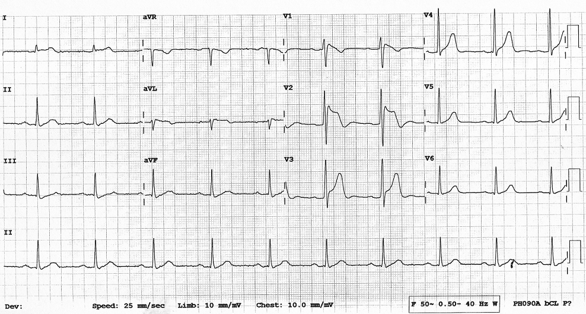
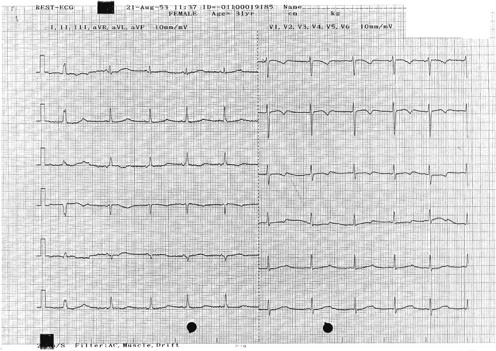
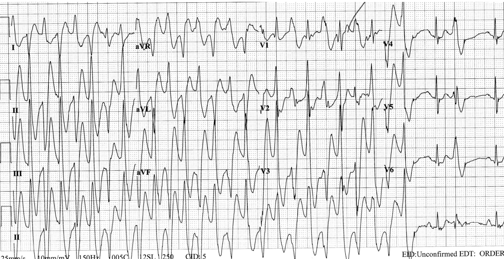
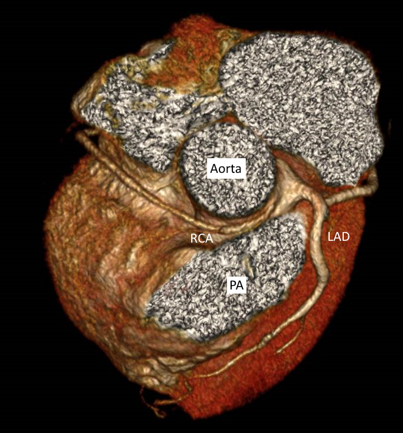

Causes of SCA in normal structural heart
- Long QT syndrome
- Brugada syndrome
- Wolff-Parkinson-White syndrome
- Early repolarization syndrome
- Others: Catecholaminergic polymorphic VT , Short QT syndrome , and Idiopathic VF
Etiologies of SCA survivors with structurally normal heart.
Data from 52 survivors in Thailand.
refresh
Brugada Syndrome

Associated with syncope or SCA due to VF predominantly in young Asian male.
Typical ECG findings (Coved ST elevation in V1-V2) can be dynamic.
Triggers include fever, cocaine, alcohol, benzodiazepines, and hypokalemia.
Triggers include fever, cocaine, alcohol, benzodiazepines, and hypokalemia.
High risk features:
spontaneous coved type ECG, history of syncope, and prior cardiac arrest.
spontaneous coved type ECG, history of syncope, and prior cardiac arrest.
Long QT syndrome

More than 10 different types of genes involved in LQTs have been described.
Triggers
include QT-prolonging medications (ie. TCAs, Quinolones, Macrolides, & etc.), hypoK, and hypoMg.
include QT-prolonging medications (ie. TCAs, Quinolones, Macrolides, & etc.), hypoK, and hypoMg.
High risk features:
QTc>470 ms, LQTs II & III, Hx of syncope or SCA.
QTc>470 ms, LQTs II & III, Hx of syncope or SCA.
Wolff-Parkinson-White Syndrome
can lead to rapid ventricular conduction, ventricular arrhythmias, and SCA.


Early Repolarization Syndrome
SCA in normal structural heart and normal resting ECG.

Catecholaminergic polymorphic VT (CPVT)

Idiopathic VF
Coronary Anomalies

O
ne of the most common causes of SCD in
young athletes especially with anomalous origin of right coronary artery
from the left coronary cusp (ARCAOS), using interarterial course.
SCA is complex and hardly predictable.

 heartRhythmBox.com
heartRhythmBox.com